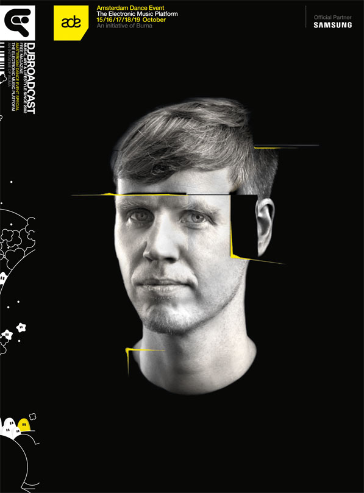
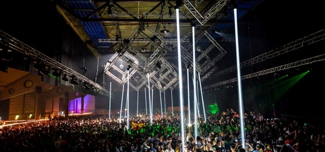
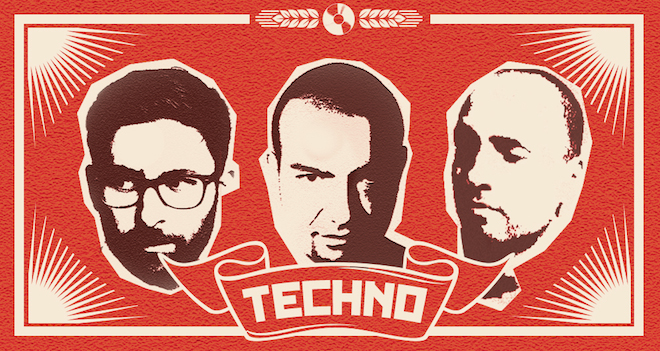
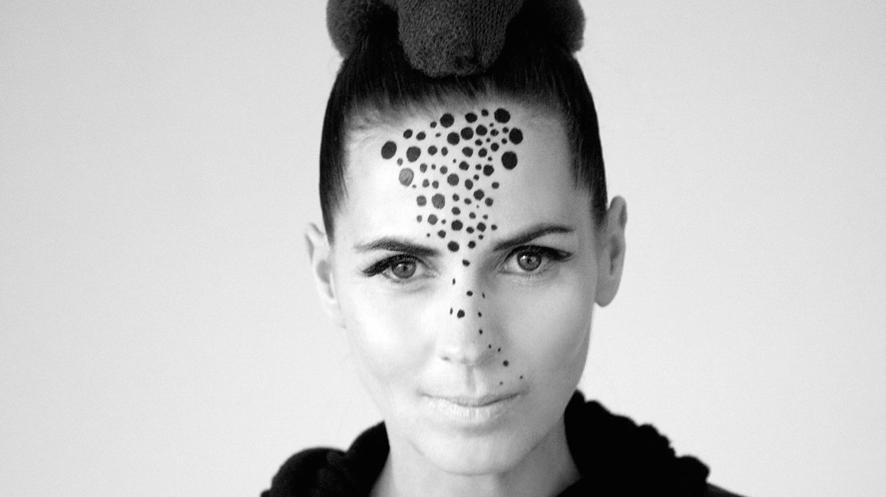
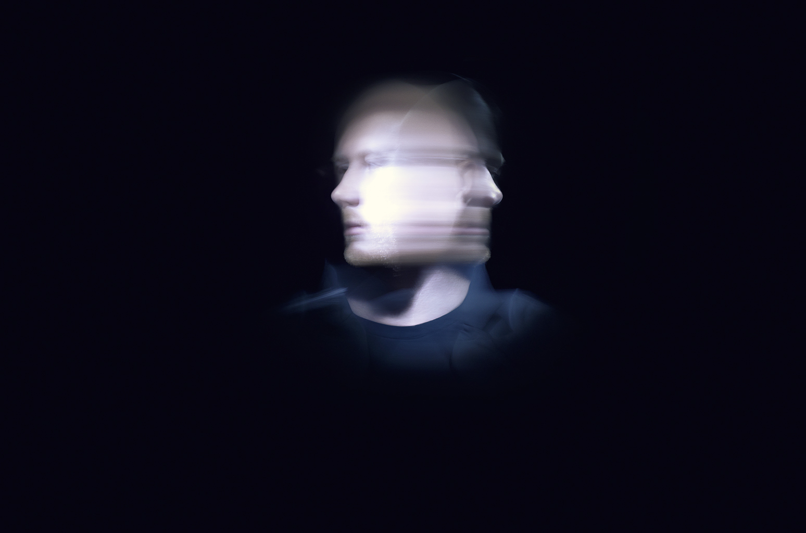
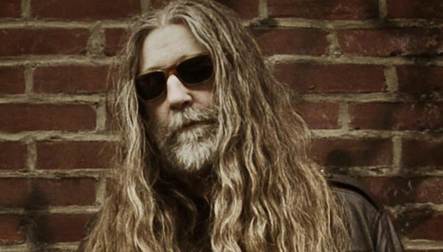
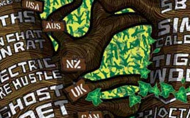
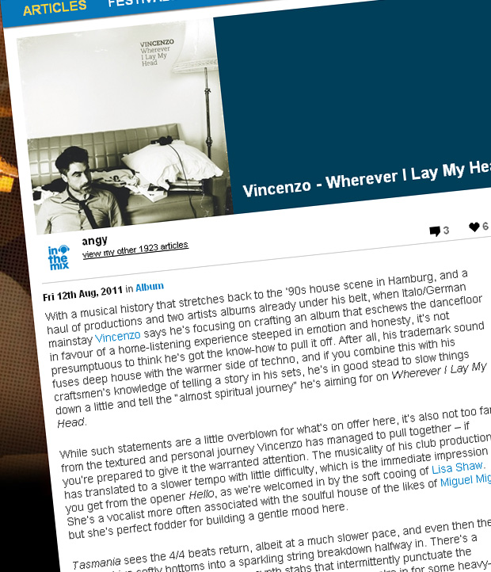
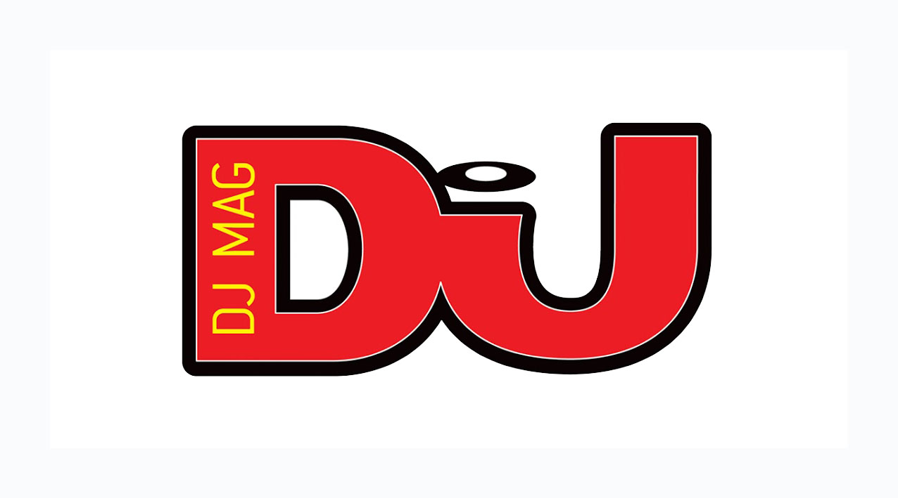
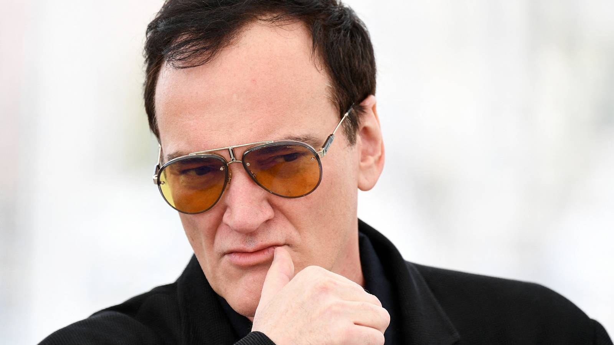

Print Features

Events & Travel

In-Depth Features

Print Interviews

Artist Interviews

Online News

Artist Q&As

Promos & Bios

Music Reviews

DJ Mag Column

ScreenRant
Video Interviews

Native Instruments
Angus Paterson is a journalist, editor & digital content producer who’s worked as Editor of leading Australian dance music website inthemix, produced music content for Vodafone Australia, is working as a contributing editor for Insomniac Events in the USA & freelances for a variety of publications including Street Press Australia's national portfolio of publications, DJBroadcast in Berlin, prestigious UK publication DJ Mag, live streaming leaders BE-AT.TV and Boiler Room plus Native Instruments, ScreenRant, and many more.